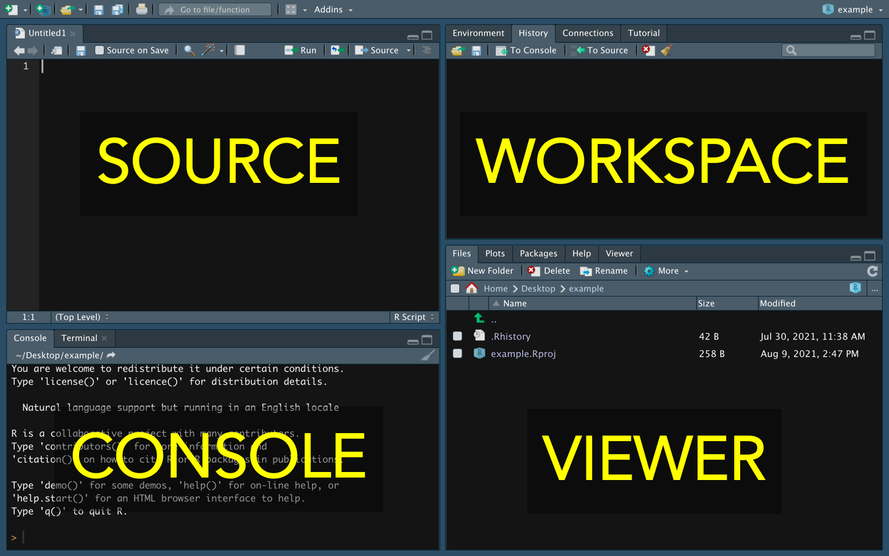
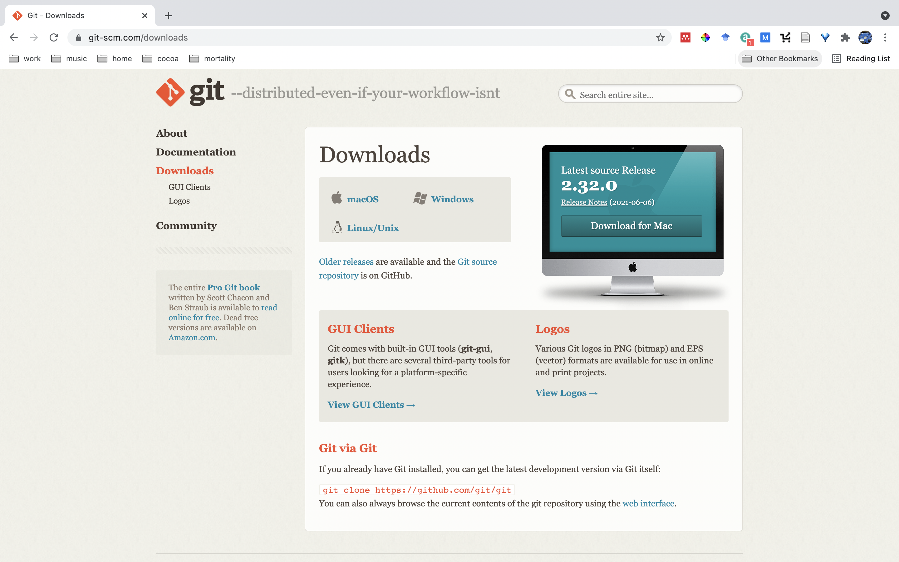
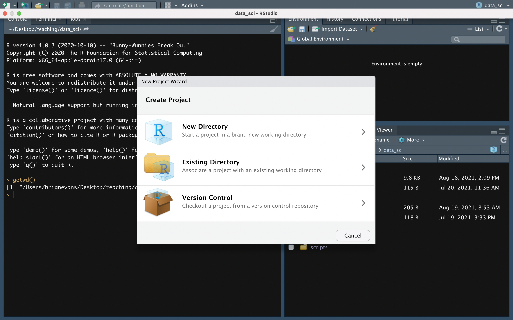
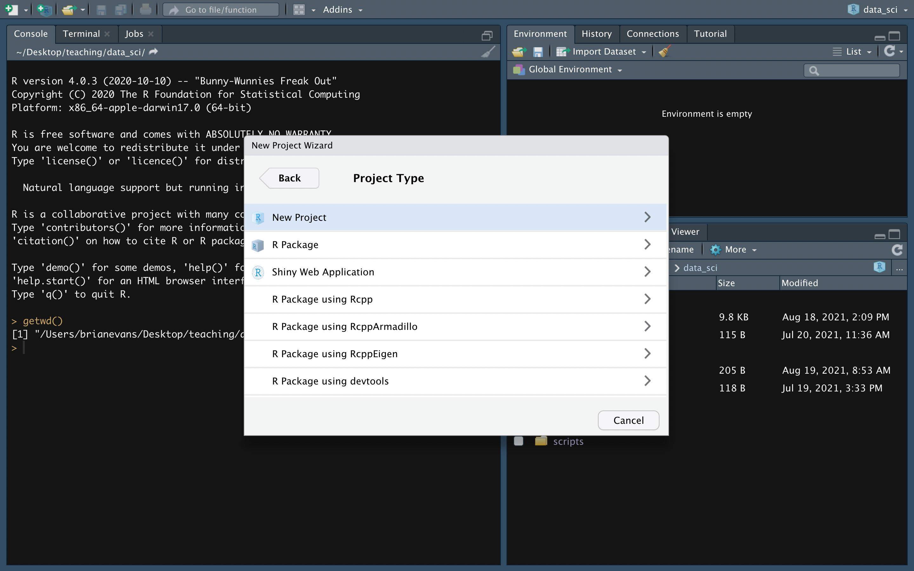
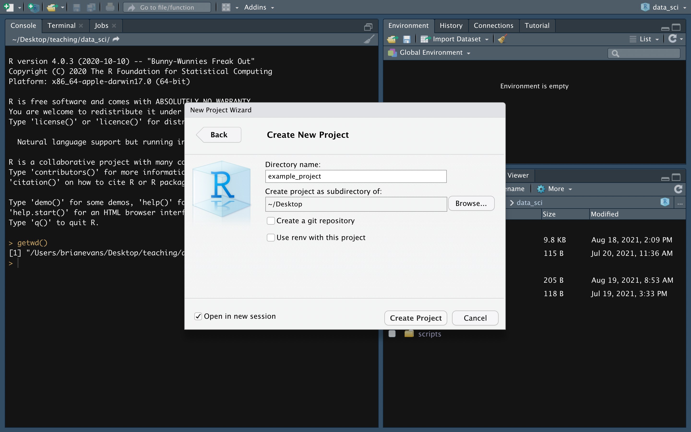

Overview

Using projects in R Studio really enhances your workflow and increase the ease with which you can communicate code with others (and yourself!).
In this lesson we will create a project in R Studio. While this document will cover much of the same material as Lecture 2, Project and script organization with R Studio, be sure to watch that video as well. The material covered here will not include many of the tips and tricks that you will learn in that video. Also, please be sure to complete Lecture 1, Review of R programming basics and Lecture 3, Reading and writing data prior to starting this lesson, as some of the material covered there may build on that information.
Material covered in this lesson will include:
- Setting your global options
- Creating a project
- Structuring your project
- Reading and writing project data
- Using packrat
- Working with source files
Why work in a project?
Before going through the steps of how to work with R Studio projects, we should probably cover why you would want to in the first place.
Working in a project means that you never have to include setwd() in your code and can use relative paths to files in your system.
For example, the absolute path to my_file.csv in the code below is the exact location of that file in my operating system.
/Users/brianevans/gits/my_project/data/my_file.csvIf my working directory is set to my_project (either using set_wd() or working in a project), the relative path is:
data/my_file.csvWhat so wrong with using setwd() though?
Using setwd() in your code is dangerous because your code will never work out-of-the-box. You will have to communicate to others (and your future self) to modify their working directory to match the location on their file systems. Conversely, if you share a project with your collaborators, everything will already be in place for them to execute the code.
Even more importantly, you might change your mind about where you want to put your code or files. If you move your files to a new location, your code will no longer run until you modify the path in setwd(). Your code will be “broken”. When you use projects, you can move your project anywhere you want in your file system and R will still be able to find your files.
Never use setwd()!
Reference material
Below is some handy reference material that you can refer to throughout this lesson. Please click on the menu item to expand it.
Throughout this class, I will refer to the panes (sections) of the R Studio window. This graphic should help you remember them:

The Keyboard shortcuts we will use in this lesson are listed below for Windows and Mac operating systems.
- View all keyboard shortcuts: Ctrl + Alt + K
- Execute code: Ctrl + Enter
- Add assignment operator: Alt + dash
- Add a new code section: Ctrl + shift + R
- Save file: Ctrl + S
- Copy: Ctrl + C
- Paste: Ctrl + V
- View all keyboard shortcuts: Command + option + K
- Execute code: Command + Enter
- Add assignment operator: Option + dash
- Add a new code section: Command + shift + R
- Save file: Command + S
- Copy: Command + C
- Paste: Command + V
I strongly suggest using a keyboard shortcut whenever possible. It can be hard to do at first, using your mouse to click a button or typing a few characters is initially way easier than remembering the keyboard shortcut. If you force yourself to do it though, you won’t regret it – it saves a lot of time in the end.
Throughout this lesson, I will use terminology (i.e., jargon) that may be new to you. This menu item can be clicked at any point if you an encounter a term that you do not know or understand. Be sure to visit this menu for each lesson, because new items will be added (Never removed) as the course content expands.
- Session: Everything you do in RStudio in a single sitting.
- Menu bar: The bar at the top of the RStudio window
- Pane: The RStudio window is divided into four sections, called panes.
- Tab: Each pane has a tab on the top of it. For example, I will often refer to the Environment or History tabs of the workspace pane.
- Global Environment: The location where objects are stored locally during the current session.
- Working directory: The location on your computer’s operating system where R will attempt to read or write files.
- : Any time you see this icon (which is the font-awesome icon user secret), it mean that there is a tip that you should pay attention to that will improve your data science workflow.
Throughout this lesson and others there are several bash commands you will have to use in the Terminal tab of your Console pane. These include:
- mkdir: Make directory
- ls: List files
- cd: Change directory
- cd ..: Change to parent directory
- mv: Move directory
- pwd: Print working directory
- rm: Remove file
- rm -rf: Remove folder
RStudio IDE Cheatsheet
The RStudio IDE is the most popular integrated development environment for R. Do you want to write, run, and debug your own R code? Work collaboratively on R projects with version control? Build packages or create documents and apps? No matter what you do with R, the RStudio IDE can help you do it faster. This cheatsheet will guide you through the most useful features of the IDE, as well as the long list of keyboard shortcuts built into the RStudio IDE. Updated January 16.

Getting started
Install git
If you have not yet installed git on your on your computer, please do so at this link and follow the provided instructions for installing it on your computer.

Housekeeping
I like to do any necessary housekeeping at the beginning of each session. This means that everything I do in my current session is dedicated, in its entirety, to the task at hand. That really helps organize your workflow during a given session.
Please do the following before continuing:
If there are any script files open in your source pane. Close them. If any of the file titles are blue, save them prior to closing.
In the Environment tab of your workspace pane, ensure that your Global Environment is empty. If it is not, click the broom to remove all objects.
In the History tab of your workspace pane, ensure that your history is empty. If it is not, click the broom to remove your history.
Set your global options
Before we create a project, we want to ensure that our global options meet our needs.
On the menu bar go to Tools/Global Options…
In the General tab (see menu on left), ensure that there is not a checkmark next to “Restore .RData into workspace at startup”. This ensures that your environment will be empty every time you open RStudio.
In the dropdown menu next to “Save workspace to.RData on exit:” ensure that the menu is set to “Never”.
In the Terminal tab, ensure that the dropdown menu next to “New terminals open with:” is set to “bash” (Mac) or “Git Bash” (Windows). Bash is the default terminal for Mac, so it will be included in your available options. If you are on a Windows computer and you do not see “Git Bash” as one of your available options, ensure that you have properly installed Git onto your computer.
Create a project
On the bar on top of your RStudio window, click the “Create a project” button ( ). This will open the “New Project Wizard”.
). This will open the “New Project Wizard”.
Select “New Directory” to create a new folder in your operating system for the project:

In the Project Type window, select “New Project”:

You are now prompted to give your new directory a name and identify its location in your operating system.
- If you already created a project called data_sci (you should have during the lecture), let’s call this project “example_project”.
- Always save your project somewhere you can easily find on your operating system. When you download files, you will need to save them inside the project folder.

Hit enter to create the project.
Project structure
We will explore how to structure a project using bash scripting inside the terminal.
It’s important to note that bash commands are not the same as R commands – when you’re working in terminal, you’re working in bash, not Program R.
With your mouse, click on the Terminal tab in your Console pane.
Type the command pwd to print your working directory.
Let’s make our top level file structure. We will use the make directory command mkdir command. Type the following in terminal:
mkdir data output scriptsType the command ls to list the files in your working directory. You should be able to see files that you created.
You can use the change directory command, cd, to move directories. Move to your data folder, then type pwd to ensure that you’re in the right place.
cd data
pwdWe can use mkdir to create our subfolders. We’ll add the subfolders “raw” and “processed”.
mkdir raw processedType ls to list the files.
The argument .. refers to one folder level up from the current folder. Run the following and then use pwd to ensure that you are in the top level of your folder.
cd ..From this level, the ls command will show that data folder, but not it’s contents. Give it a try.
You can add data as one of the arguments of the ls command. For example, you run the following to see the contents of the data folder:
ls dataIn the same way, we can use the mkdir command from inside our top level folder to create subfolders in our script file.
mkdir scripts/wrangling scripts/analysisNow run ls and ls scripts to view the results.
Making and running a bash script
Now we’re going to make a shell script that we can use to generate our entire project folder structure at once. This is incredibly useful, because we typically have the same general folder structure for every project that we create.
On your top menu bar, go to File/New File/Shell Script. This opens a window where you can create a shell script.
Enter the following into the script in the Source pane:
mkdir scripts data output
mkdir scripts/wrangling scripts/analysis
mkdir data/raw data/processed
mkdir output/plotsSave the file as “make_project_folders”. R will automatically add the extension “.sh” to the file. This extension means that the script is a bash program.
Please close the file make_project_folders.sh in your Source pane.
Now, to create our entire project folder structure, in our bash terminal we simply run the following:
bash make_project_folders.shUse ls and cd to explore the folder structure that you created.
Packrat
A “quick” note on packages
Packages (also called libraries) includes sets of functions (and often data) that simplify the process of coding in R. They can be created by just about anyone — the data gurus at R, the incredible team at RStudio, scientists who created a set of R functions to run a specific analysis, and your run-of-the-mill data nerd. This is a huge advantage to R – we don’t have to rebuild the wheel every time we do a wrangling task or analysis. What might take hundreds of lines of code to create can be done in just a few lines once a package has been installed and loaded.
It’s important to note that, for the most part, anything that can be done in a package can also be done in Base R. Because of this, I always recommend being conservative about the packages you add. I’ll talk about this a lot over the course of the workshop, but I’ve seen way too many beginning and intermediate R users engage in what I call package hunting. The narrative goes something like this:
- I’m working in R and can’t figure out how to do x
- I go to Stack Overflow
- The most highly rated response to a similar problem requires installing and loading two additional packages into my system
- I do the same thing for problem y and z
- My final script has a dozen or more packages
When you’re first starting out, learning new packages and functions is a big part of the process of getting accustomed to R. At some point, however, progressing in your R skillset means you’re going to have to abandon the mentality of “there’s got to be a function for that” or “what package can I use to do x?”. You’ll find that, as your experience grows, you’ll actually use less functions and less packages rather than more.
There’s another reason to avoid being a package hunter —- packages may include errors! During my PhD, I used a function in a community ecology package for a common analyis. When I saw the results, they didn’t make much sense. I dug into the function itself and it took me at least a couple of days to figure out what each step did. I then searched the literature and found that a widely cited paper contained a typo in the formula. That typo made its way to the R package. The whole process took me over a week to solve. If I accepted the analysis in the package, my results would have been wrong. If I went to the original publication that contained the correct formula (which we should always do), I could have built the analysis from the ground up in less than a day.
Don’t be a package hunter!
Packrat
One of the challenges to adding a lot of packages to your code is that it makes your code less portable. When you communicate with code, your recipients (which may be the future you) have to ensure that they have installed all of the packages that you used in your analysis. What’s more, packages change over time – if one of the functions in a package has changed (e.g., tidyverse packages often change considerably), your code may be irrevocably broken. That’s super dangerous.
The package packrat addresses these problems. With packrat initiated in your R Studio project, only packages loaded into the project itself will run. In other words, even if tidyverse has been installed in your computer, you will not have access to the functions unless you also install it in your package.
What’s cool about this is that, when you share your folder, you share the packages themselves. The package you share will be the same version as the one that you used to run your analysis, so there will be no concern over which version of the package was used.
To use packrat, you simply run the following in the Console tab of your Console pane:
packrat::init()Packages are installed into your project in the same way you install packages in other instances. Run the following line of code in the Console tab of your Console pane:
install.packages('tidyverse')You now have saved the tidyverse package into Packrat into your library. When you share your project, you share your packages in their current state (i.e., version).
Reading and writing
Reading and writing data is a breeze if you’re working in a package. As I stated in the introduction to this lesson, you only have to supply the relative path to your files.
Before we begin, save the file “portal.csv” from your class folder into data/raw folder of your project.
Now open up a new script file in our Source pane.
Let’s set up this script file before we begin. Save the file and give it the name “read_write”.
Create a new code section (see Reference, Keyboard shortcuts) and give that section the name “setup”. In the setup section, load your tidyverse library:
library(tidyverse)On a new line, add a comment that says read in data.
To read in the file, you would simply type (Note: Please see the lecture “Reading and writing data”):
# read in data
portal <-
read_csv('data/raw/portal.csv)You can also simplify this using the file.path() function. I use this when a file is embedded deeply inside my file structure (sort of a silly example here):
# read in data
portal <-
read_csv(
file.path(
'data/raw',
'portal.csv'))Sometimes, when things get really messy (e.g., deeply embedded files), I assign a key to my file paths. Here’s how the top section of my code would look:
# setup -------------------------------- ...
library(tidyverse)
# file paths
read_dir <-
'data/raw'
write_dir <-
'data/processed'
# read in data
portal <-
read_csv(
file.path(
read_dir,
'portal.csv'))Let’s create a really simple file to write.
Let’s first add a comment that says we are going to write a file.
# write fileThen use the tibble function, which is a function used to generate a tibble data frame (Note: “letters” is a built in constant – a vector of lowercase letters from a to z).
# write file
silly_tibble <-
tibble(
x = 1:5,
y = letters[1:5])And write this file to the processed data folder:
# write file
silly_tibble <-
tibble(
x = 1:5,
y = letters[1:5])
write_csv(
silly_tibble,
file.path(
write_dir,
'silly_tibble.csv'))Please note that it’s important to manage objects in your Global Environment. If I had no intention of doing anything with the R object silly_tibble (and I don’t in this case), I would instead have written the following:
# write file
write_csv(
tibble(
x = 1:5,
y = letters[1:5]),
file.path(
write_dir,
'silly_tibble.csv'))Here’s what your whole script should look like:
# setup -------------------------------- ...
library(tidyverse)
# file paths
read_dir <-
'data/raw'
write_dir <-
'data/processed'
# read in data
portal <-
read_csv(
file.path(
read_dir,
'portal.csv'))
# write file
write_csv(
tibble(
x = 1:5,
y = letters[1:5]),
file.path(
write_dir,
'silly_tibble.csv'))We actually aren’t going to use the objects portal or silly_tibble. We can remove them using the rm function in our Console pane.
We can do so individually, like this:
rm(portal)
rm(silly_tibble)Or all at once:
rm(portal, silly_tibble)rm in Terminal tab of the Console pane to remove the file from your project folder.
Working with source files
Our last step in our package creation process is write a source file. A source file is a location where you can store functions and other R objects that you will use across scripts.
We’re going to create a file that we’ll designate as a source file and then refer to that file directly in our code.
Start by opening up a new script.
Save the file in your “scripts” folder. Let’s call the file “my_source_file.R”.
In the Console pane, type howdy and hit enter. You should get an error message.
That means that the key howdy has not been assigned to any object in you Global Environment (nor in the environments of your packages).
Now in my_source_file.R, type the following (but don’t run it):
howdy <-
1:5Save and close my_source_file.R.
You should still get an error when you type howdy in your Console pane, give it a try.
Now go to your Source pane and the file “read_write”. on the line after you load the package, type the source function, followed by the path to the file:
source(my_source_file.R)Have a look at the Environmnet tab of your Workspace pane. Anything in there?
Type howdy in your console pane now. What did you get? Why?